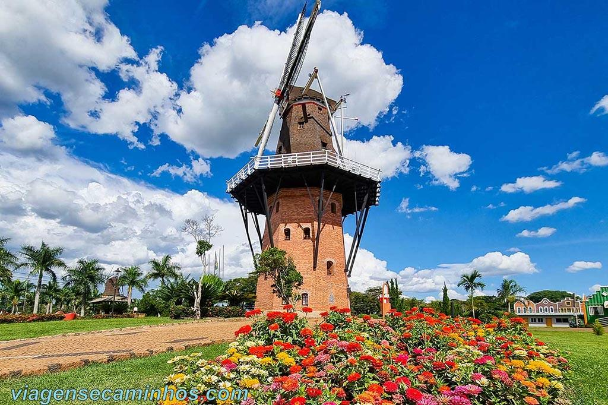
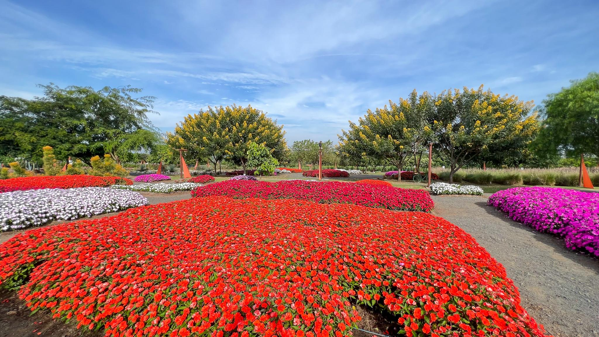
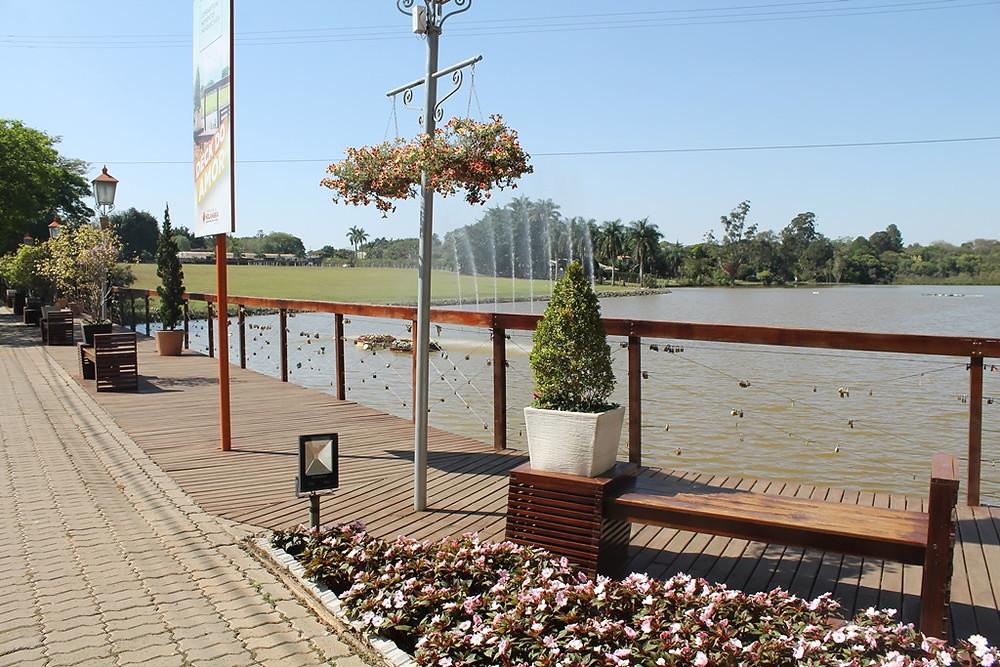

Um dos principais cartões-postais de Holambra, com arquitetura holandesa e um mirante com vista panorâmica da cidade.
Veja mais!
Parque florido com jardins coloridos e cenários encantadores, ideal para passeios e belas fotografias.
Veja mais!
Um charmoso ponto turístico à beira do Lago Vitória Régia, perfeito para passear e apreciar a paisagem.
Veja mais!